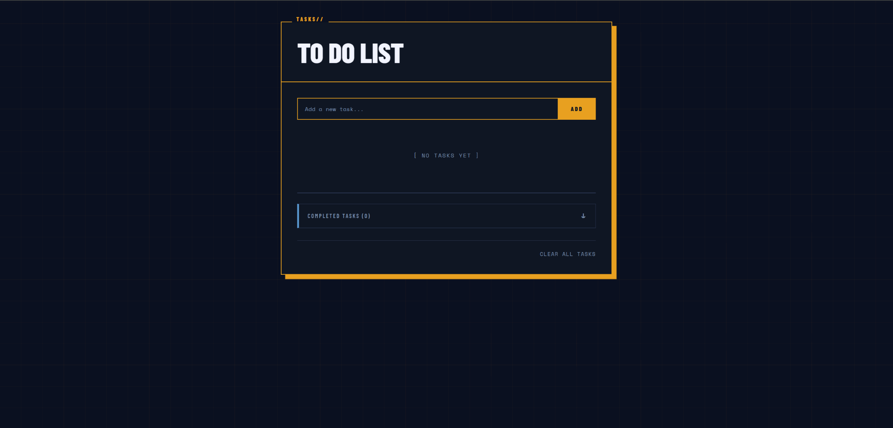
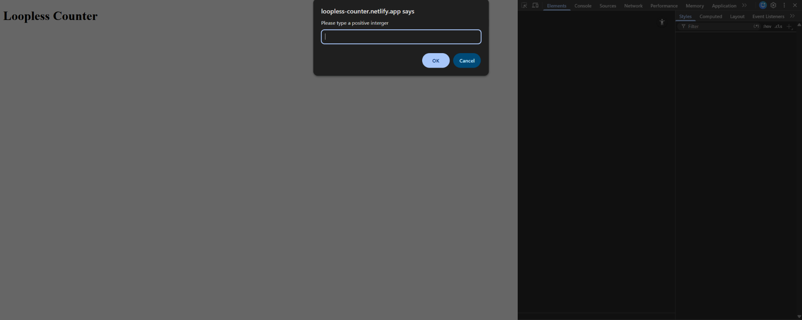

EECU Budget Calculator

Project Description:
This budget calculator was designed to fit EECU's design choices, and act as an online resource for anyone who needs help tracking theirpersonal spending. It utilizes preset income levels based on career choices and set tax values. The input sections utilize JavaScript to create more sub-categories, and CSS to ensure the styling and layout is consistent.
To Do List

Project Description:
The To Do List runs on JavaScript functions including eventListeners to implement a drag and drop feature, priorities, and completions. CSS is utilized to give the website a fun look and feel, as well as characterizing the task list.
Loopless Counter

Project Description:
Although using a loop would greatly simplify this task, this small function demonstrates that there is more than one way to skin a cat. It is very important to be able to problem solve in different ways, and have ideas that are uncommon to help innovate greatness.
Animal Welfare Essay

Project Description:
This paper highlights key points in the argument over animal welfare while in captivity. It specifically touches on the uses of programmable sensory systems to make zoo living habitats more humane to live in.
Black Hole Research Paper

Project Description:
Black holes have very interesting properties, and this research paper highlights some of its properties over time-space. Although it was made roughly two years ago, this paper should still accurately convey scientific information.